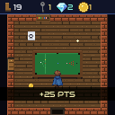
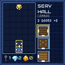
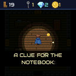
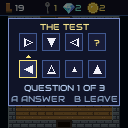
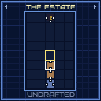

The estate is a blank 5×8 blueprint. You start each day in the Entrance Hall at the bottom with 20 steps — every doorway you pass through costs one. At the top, behind a golden door, waits the Antechamber: on the map it is nothing but a dark cell and a pulsing keyhole. Enter it and the day is won; run out of steps and the day ends where you stand. Either way, tomorrow the blueprint is blank again — only your best score, and the case, survive.


Someone vanished from this house, and the prince intends to find out who — and why the halls redraw themselves at dawn. Every day you win, the Antechamber gives up one fragment of the case. Fragments are kept forever: press B on the title screen to open the Case Board and read what you've pieced together. There are eight. The last one is worth reaching.
Walk into a door that leads to an unexplored cell and the drafting desk opens: the full blueprint on the left, a hand of room miniatures on the right, each with its wall ring coloured by rarity. The selected room is previewed live in its cell — doors and all — before you commit. A places it and walks you in.
Locks get likelier the higher you climb. A plain lock takes one key — found on floors, in chests, or sold in the shops. Near the top, some locks are keycard readers instead, and keys mean nothing to them: the rare Keycard reads green forever, a Security terminal arms a one-door override, and the Power Room breaker kills every reader for the day — at the price of stiffer ordinary locks.
The golden door itself is triple-locked: three keys at once, or the Master Key. But one day in three it bears three seals instead — keys are useless, and three levers lie hidden in the rooms you draft. Throw all three to unseal the way; the map counts them for you.
Treasure chests open with a bump; padlocked ones take a key and pay better — gold, gems, keys, evidence, sometimes the Keycard itself.
Sixteen rooms hide a puzzle in their furniture: the Study's safe, the Foyer's clock, the Music Room's piano, the Chapel's candles, the Great Hall's floor plates, the Rotunda's statues, the Library's bookshelf, the Gallery's portraits, the Wine Store's vintages, the Games Room's chessboard, the Snooker Room's ball rack — where the balls count their snooker worth — and more. Walk up and press A.


No clue can help you here. THE TEST is three visual-reasoning questions of rising difficulty — counts, sizes, angled bars, three shades, orbiting satellites, and full scenes where a shape circles the glyph while it spins and shades at once. Every wrong option is one attribute away from the right one, so nothing falls to a glance — and one wrong answer dismisses the class for the day. Top of the class pays +125 and a hatch holding a gem, a key and a pouch.
| Tool | Found | Does |
|---|---|---|
| Spade | Garden · Tuck Shop 10g | Dig the sparkling spots |
| Pencil | Study · Atelier · Apothecary 14g | B redraws a draft offer (1 gem) |
| Compass | Draft Room · Apothecary 14g | LB/RB turns a corner or T room (a gem per offer; corners stay corners) |
| Spyglass | Apothecary 12g | Every offer deals 4 cards |
| Master Key | Key Smith 30g | Opens every lock and seal, all day |
| Keycard | chests · Key Smith 18g | Opens every reader |
Three shops stock the estate: the Tuck Shop (keys, gems, snacks, the Spade), the Key Smith (keys, Master Key, Keycard) and the Apothecary (tonics and the fortune tools). Your kit lives in the Satchel page.
Press RB in the halls to open the estate pages; LB/RB flip between them, B closes.

Every room belongs to a hidden class. The instant you place a room, if it shares a wall (N/S/E/W, not diagonal) with an already-placed room and the two classes pair up, you score a combo — once per matching neighbour, right at placement. Corridors, gardens, shops and puzzle rooms have no class and combo with nothing.
| Class | Rooms |
|---|---|
| Food | Kitchen, Dining, Pantry, Scullery, Banquet, Butler's |
| Rest | Bedroom, Suite, Guest, Lounge, Bunk, Games, Snooker |
| Bath | Washroom, Laundry, Linen, Spa |
| Book | Library, Study, Draft Room, Nook, Atelier, Classroom |
| Drink | Wine Store, Cellar, Hearth |
| Grand | Great Hall, Chapel, Foyer, Rotunda, Music Room |
| Combo | Pairing | Bonus |
|---|---|---|
| Service Wing | Food + Food | +30 |
| The Archive | Book + Book | +30 |
| Cellarage | Drink + Drink | +30 |
| En-Suite | Rest + Bath | +30 |
| Well Stocked | Drink + Food | +25 |
| Quiet Wing | Rest + Rest | +20 |
| Procession | Grand + Grand | +40 |
Two other placement bonuses count the same way: a green room scores +25 per adjacent green, and Matched Wings (+50) is a room's twin mirrored across the centre column. Group rooms of a kind into adjacent clusters and the bonuses stack.
The chain is a streak, not a pairing. Any placement that scores a bonus of any kind — a combo, a green-adjacency, Matched Wings, a completed rank or a completed file — bumps a running multiplier: ×2, then ×3, then ×4. Score a bonus on consecutive placements and it climbs; place a room that scores nothing and the chain snaps back to ×1.
| Input | In the halls | On the desk |
|---|---|---|
| D-pad | Walk (bump doors & chests to use them) | Select a card |
| A | Dig · shops · puzzles · levers | Place the room |
| B | — | Redraw the offer (Pencil, 1 gem) |
| LB / RB | RB: estate pages (LB/RB flip, B closes) | Rotate the room (Compass) |
| MENU | Pause · end day · quit | — |
On the title screen: A starts a day, B opens the Case Board.